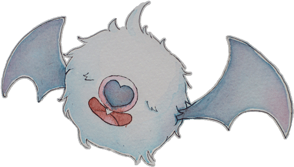

my pokemon journey started when i went on vacation with my cousins at the oregon coast! my cousins both had a gameboy color and one of them let me start a new game (without saving) to try them. i loved it and was so upset when my aunt turned off my game while we were outside playing. on the way back home, my family stopped by costco and my dad bought a gameboy color for both me and my sister. i picked the teal one because it was bundled with yellow even though i really wanted the berry one! i attempted to play it all the way home but you really cant play gameboys in the dark
i remember getting mewtwo but not getting to giovanni so i think my memory is failing me. i have to wonder how far i actually got... i got gold version the christmas after it came out! i was so excited! my cousin told me the beginning was too hard for me so she needed to deliver the parcel for me. okay dude!!
i dropped my yellow cart in our car and was never able to find it again. rip. my gold cart was also lost but i think it was left in someone else's gameboy collection when my parents went on vacation and left us with a babysitter
a few years later, my imouto's best friend gave me her extra gold cart. i finally could read much better than a kindergartener so maybe this was the true beginning of my pokemon journey.
i replayed yellow on my 3DS and holy crap this game is hard. there's no way i beat it in kindergarten! i like how they check if you encounter a pokemon before taking a step rather than after. it looks so weird.
i had pokemon pinball but it is also MIA
I currently own blue, yellow *2, and yellow (JP)
i lost my original yellow cart as a kid. i somehow convinced my dad's employee to buy me a blue cart also as a somewhat older kid.
I bought a yellow cart at pink gorilla in 2016 or so for around $24. I had some sort of coupon from sakuracon. I haven't restarted it but the previous owner had beat the elite four like 50 times. surely he found something else to play...
in april 2022, i found another cart at my favorite thrift store for $2.75. our dear friend JACK and his pikachu did not get very far.
Started February 27, 2016. Time 32:10
i always have to start this gen with a cyndaquil named conrad. that's just how it has to be.
azalea town is my favorite song of all of the games
i recieved this game for christmas from my parents the year it came out. i remember my cousin (2.5 years older) thought it would be too complicated for me to start the game so she did it for me.
it will always have a special place in my heart as the first generation i played while being able to read. im not sure i was able to read well enough to enjoy it the first time i played, but the second time i had a grand old time.
my original gold version was lost, but i still have the box! one of my sister's friends gave me and extra copy when i was in late elementary school that i played to completion!
the battery has died and been replaced. rip my ampharos that i loved very much
I own Ruby and Fire Red. i spent a lot of time playing these games in the park with my friends during the summer. i found feebas, saw a shiny pidgey, and caught a shiny oddish!
Time 54:12
i'm pretty sure i cheated by borrowing my friends pokemon to beat the elite four. only 2 of these have my trainer number
Time 9:44
I restarted Fire Red and never rebeat it so my original team info has been lost.
i have a spikey ear pichu named "DEOMY-NEYO". i spent months wondering what deomyneyo meant. finally the mystery was solved when i saw a ne-yo CD and started saying "deo my ne-yo" again like a 12 year old idiot.
i chose soul silver instead of heart gold because the preorder bonus was a little lugia statue. i showed up at gamestop to pick up my game and they told me they were out of lugia statues and only had ho-oh left. i was angry but i took the ho-oh anyway. i still have it sealed in my room at home and also still hate gamestop.
i made a very bad team in soul silver and got past the first elite 4 member and saved. i couldnt beat the 2nd so i got one of my friends in high school to. i still couldnt beat the 3rd so i got ryan to finish them in like 2019. i still need to go back and finish the post game!
while i was in germany i wanted to get a game in german! i saw a used copy of pearl in an american store and bought it. i'm not very far because i have to have my dictonary out to play it.
i used to own a mystery dungeon game. i had fun with it but i sold it for doll money. i regret that.
i own 2 copies of diamond, perl (DE), and Soul Silver.
Started May 25, 2007. Time 82:30
As it turns out, I never beat this game?? I'm just as shocked as you are.
Started March 14, 2010. Time 39:22
i cant remember why i was outraged about these games, but i did not buy them when they came out.
ryan assured me they are good and bought me black in 2019 and white 2 in 2020 (also a new 3DS since i broke mine ;a;). i love reshiram!! i'm still working on black but i love the low HP song and the fake pixel work and all the pokemon.
the used black cart had a shiny minichino on it so i traded it over to ryans game and then back to mine after i restarted it. thanks "CHRIS" from california! i hadnt seen a shiny in the wild since fire red, but in 2021 i caught a shiny minichino! 2 of the same shiny found on one cart!
Started January 20, 2020. Time 23:53
i got y version during a black friday sale at toys r us. unfornately there was no toys r us near me so my friend wat in california bought it and tmnt since they were a bundle and sold the tmnt for me and shipped Y to me for the net price plus shipping. it was actually super nice of him!
i dont remember much about y other than that super awesome lumiose city and roller blading. that city is definitely the coolest
i bought omega ruby as a birthday gift to myself since it was on sale at target. i picked it up and the service desk girl said happy birthday to me! i went over to the crab pot to have a birthday lunch and the waiter was not impressed with me playing games alone while eating a clam chowder bread bowl.
Started December 15, 2013. Time 53:37
Started December 15, 2015. Time 45:08
im gonna be the weird guy here but i did like moon and ultra moon a lot! I thought the UI upgrades in Ultra were so cute! the protag's face is mega stupid tho why didnt they add any animations hahaha
rotomdex is my new boyfriend. i previously misremembered shield as the game where I used purely new pokemon. it was in fact moon.
i preordered moon on amazon expecting it to come on the day of release (as promised) and it showed up while i was out of town. thanks amazon. my best friend was still in town and saved it from my doorstep for me. she saved the day again! i got to hold a copy in walmart the day of release.
i didnt realize ultra moon was pretty much the same game but i got it for $20 on amazon on black friday so i wasnt too upset. i stole ryan's complete pokedex and got myself a shiny charm and bred a shiny rotom for the first time in this game.
i own detective pikachu but you shouldnt.
i didnt play either lets go game
Started November 23, 2016. Time 62:05
Started December 17, 2018. Time 128:16
ryan bought me shield as an early birthday gift. i cant say i was a fan of the game though. this was the first game i completed the pokedex myself but they made it incredibly easy. i bred 5 shinies in this game and never used them. shiny hunting is a waste of time. it felt really awkward to have animated flaps but no voices. maybe someday they'll add voice acting? it could be fun.
what i really did enjoy about this generation was the ability to access your boxes from almost anywhere in the game. is it cheating? absolutely. but it let me raise a team larger than 6!
ryan also bought me shining pearl for my early birthday! its definitely a classic pokemon game. i love the underground and i have spend way too much time digging down there. its really fun! my biggest complaint is that the chibi models have fingers. thats too much detail imo
Started November 16, 2019. Time 169:48
Started November 20, 2021. Time TBD
forget it they're all cute!!!!
{kind=link}